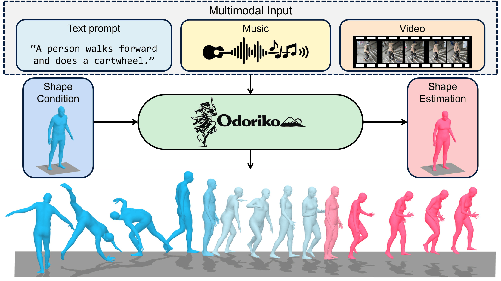

Sony Group Corporation
Working on multimodal generative models including video-to-audio generation and multimodal human motion generation.
I am a Research Scientist at Creative AI Lab, Sony Group Corporation in Tokyo, Japan. I received my Ph.D. from the Lab for Autonomous Robotics Research (LARR) at Seoul National University, advised by Prof. H. Jin Kim. Previously, I was a Research Intern with Seed Vision at ByteDance USA.
My research focuses on multimodal generative AI and robotics, including video-to-audio generation, text-to-3D generation, multimodal human motion generation, depth estimation, and reinforcement learning.

Working on multimodal generative models including video-to-audio generation and multimodal human motion generation.

Mentors: Yichun Shi, Peng Wang. Working on relightable text-to-3D generative models.
★ denotes first or co-first author · 1 equal contribution

A shape-aware human motion framework that supports generation and estimation from multimodal inputs, including text, music, video, and 2D poses, while improving biomorphological plausibility.

A multimodal hierarchical network (MMHNet) that enables scalable video-to-audio generation, achieving long-form synthesis by training on short instances and generalizing to extended durations.

A consistency-aware monocular depth estimation framework that leverages wheel odometry and optical flow to produce temporally stable and accurate depth predictions.

A unified and efficient dense layer that approximates fully connected feedforward layers with linear-time complexity, enabling scalable and resource-efficient neural networks.
An unsupervised reinforcement learning framework that encodes states in a circular latent space to discover diverse periodic behaviors for locomotion.

A reinforcement learning framework that learns 3D-aware representations from single-view RGB via masked ViT and NeRF, enabling viewpoint-robust robot manipulation without multi-view supervision.

A light-conditioned multi-view diffusion model that improves text-to-3D generation by disentangling lighting-dependent and invariant components for enhanced relighting and geometry.

A latent diffusion-based framework that removes domain-specific components and preserves structural consistency for domain-adaptive monocular depth estimation.

A depth estimation framework that learns domain-invariant geometric representations by disentangling domain-specific components with Gram matrix representations.

Learning unified cross-modal representations from RGB, depth, and semantic inputs for enhanced drone-based target tracking.

A first diffusion-based framework for monocular 3D human pose estimation that generates diverse 3D pose hypotheses from a single 2D keypoint input with GCN.

A semantic-aware NeRF-based framework that jointly learns 3D-aware and object-centric representations for improved reinforcement learning performance.

Swin Transformer-based encoder and densely cascaded decoder architecture for unsupervised depth estimation using monocular sequences.

A generative state-to-image framework that bridges state and image domains to improve generalization in image-based offline reinforcement learning.

A frequency-separated, normalizing flow (NF)-based super-resolution framework that generates diverse and high-quality outputs by modeling high-frequency details.

A self-supervised learning approach for monocular depth estimation that leverages gradient-based representations and momentum contrastive loss to capture geometric information.
Reviewer: CVPR, ICCV, ECCV, ICLR, NeurIPS, AAAI, ICML, ICRA, IROS, 3DV, etc.